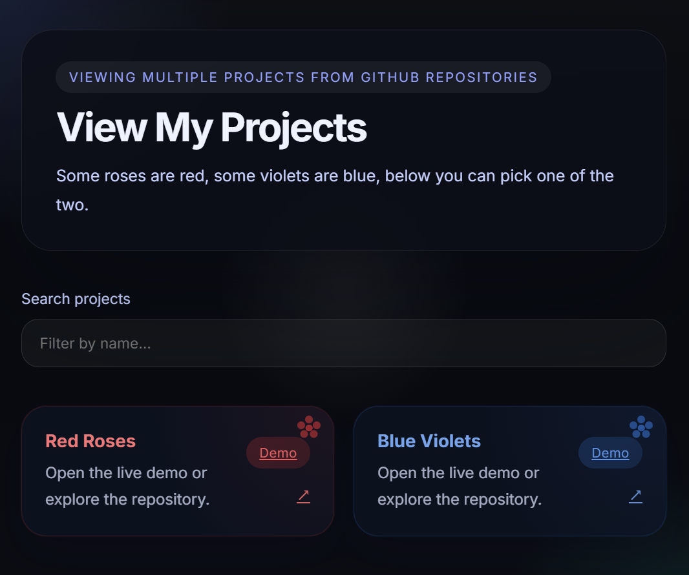
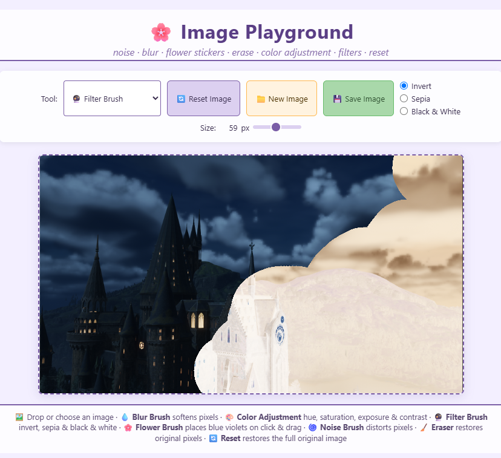
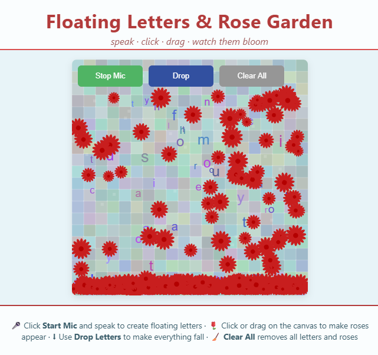
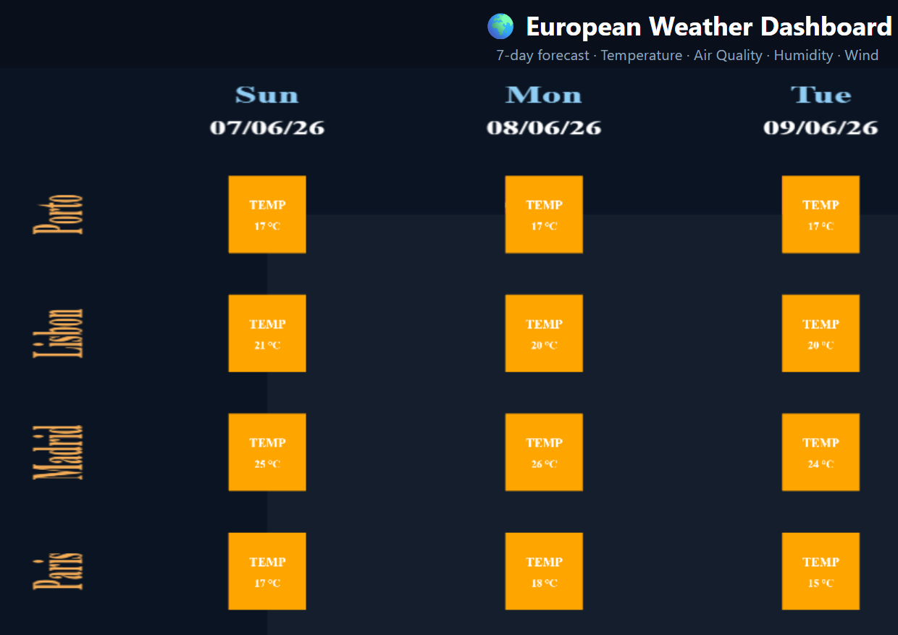
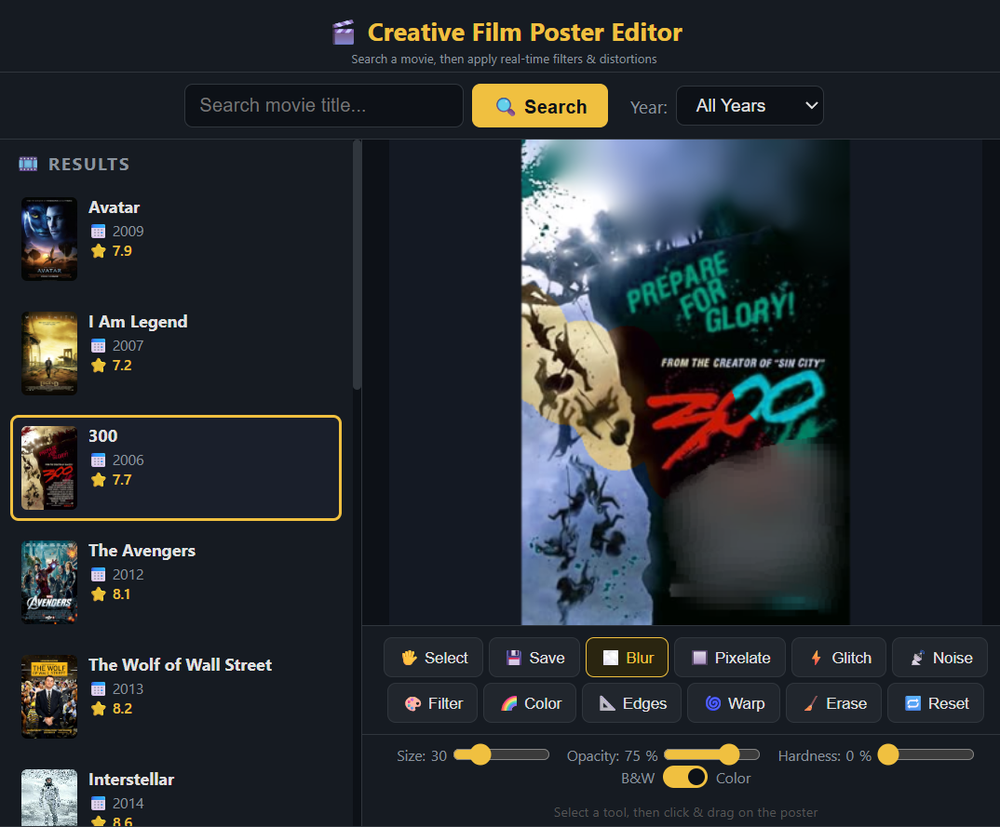
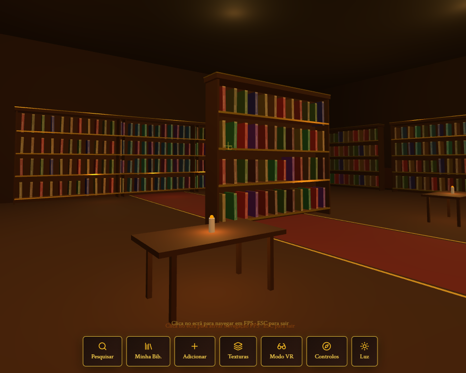

Edições Multimédia interativas
Os meus projetos
Cada projeto GitHub Pages é visualizado numa janela integrada (iframe). Para projetos externos, abrem em nova aba. Navegação fluida e fechamento intuitivo.



Unity Cinemachine (Projeto 2)
Abrir link

